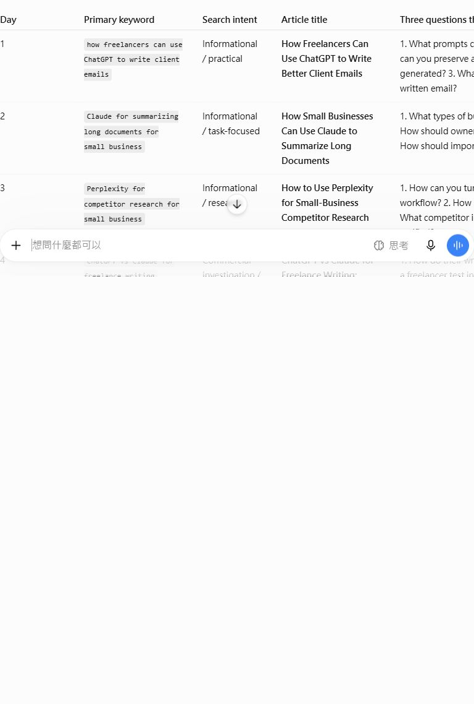
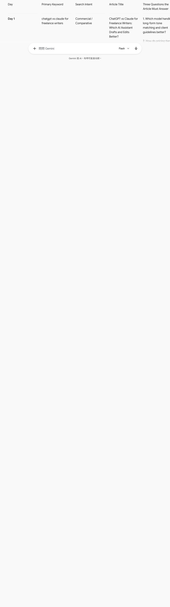

We gave ChatGPT and Gemini the same 7-day editorial planning task
This is a real browser test, not a synthetic comparison. Both tools received the same prompt, at the same time, with no paid features and no follow-up instructions.
Why we ran this test
AI tool reviews often claim that one assistant is better without showing the actual task. We wanted a narrower question: if both tools receive the same editorial brief, which response can a small content team use with the least correction?
The test used an English-language AI tools directory as the context. This matters because a useful answer must understand the existing pages, avoid invented search volume, and propose topics that connect naturally to the site.
The test method
- ChatGPT used the default web chat interface.
- Gemini used the Flash mode available in the web interface.
- Both tools received the same prompt in separate new conversations.
- No paid feature, file upload, custom instruction, or follow-up prompt was used.
- Both outputs were visible within 37 seconds of submission.
- Claude required authentication and Arena AI required reCAPTCHA, so neither was scored or represented as tested.
This is a focused editorial-planning test, not a general benchmark of writing quality, reasoning, coding, or safety.
The exact prompt
You are helping plan a 7-day editorial sprint for an English-language AI tools directory.
Audience: freelancers, small business owners, and remote teams.
Website pages available:
- ChatGPT, Claude, Gemini, Perplexity, Microsoft Copilot tool reviews
- Coding, Writing and SEO, Productivity, and Business category pages
- Guides about small business, freelancers, remote teams, and SEO writing
Create a 7-day content plan in a table with:
1. Day
2. Primary keyword
3. Search intent
4. Article title
5. Three questions the article must answer
6. Three relevant internal links
7. Facts that need verification
Rules:
- Do not invent search volume.
- Mark uncertain assumptions as [VERIFY].
- Prioritize long-tail topics over broad topics such as "best AI tools".
- Keep each article practical for the named audience.
- Return only the table and a short rationale.What each tool produced
ChatGPT
ChatGPT returned seven rows and a rationale. The plan used practical long-tail topics such as client-email writing, long-document summaries, competitor research, freelance writing comparisons, meeting notes, SEO workflows, and remote-team reporting.
Its strongest feature was link context: it referred to existing page names such as the ChatGPT, Claude, Perplexity, Business, Productivity, Writing and SEO, freelancer, and remote-team pages. Those still need to be converted into exact URLs, but the content map is easier to validate.

Gemini
Gemini returned a longer answer with more [VERIFY] flags. It surfaced useful questions around pricing, data retention, workspace administration, PII, and current product limits.
Its material weakness was internal-link accuracy. It proposed paths such as /categories/writing-and-seo, /guides/small-business, /guides/remote-teams, /guides/seo-writing, and /guides/freelancers. Those are not the actual paths on this site, so the output would create broken links if published without review.

How we scored the outputs
Each category is scored from 0 to 2. The scoring criteria were written before comparing the outputs.
| Tool | Clarity | Specificity | Non-template | Internal links | Verification | Total |
|---|---|---|---|---|---|---|
| ChatGPT | 2 | 2 | 1 | 1 | 2 | 8/10 |
| Gemini | 2 | 2 | 1 | 0 | 1 | 6/10 |
Gemini received a lower verification score because the incorrect internal paths create tangible editorial work. More words and more warnings do not compensate for links that do not exist.
What this changes for our workflow
- Never trust generated internal links without checking the live sitemap and local page paths.
- Use a general assistant for a first content map, but keep the site structure in the prompt.
- Treat [VERIFY] as a task list, not evidence that the fact is correct.
- Do not write a tool review until the team has actually tested the tool or clearly labels the review as research-based.
- Score the output against the work that remains, not the confidence of the response.
Verdict
For this specific job, ChatGPT produced the more usable editorial map because its internal references were closer to the real site. Gemini produced a useful risk checklist and more detailed questions, but it would have introduced broken paths if copied directly.
The practical recommendation is to use ChatGPT for the first structural draft and Gemini for a second-pass verification checklist. A human editor still has to validate every link, source, keyword assumption, and product claim.
Sources and limits
The original prompt and full text outputs are stored in content-lab/captures/. Screenshots are from the browser sessions on October 1, 2026. Product interfaces, model names, limits, and outputs can change.